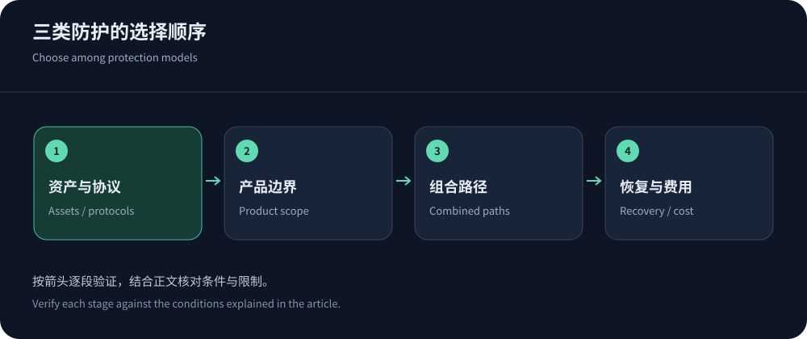
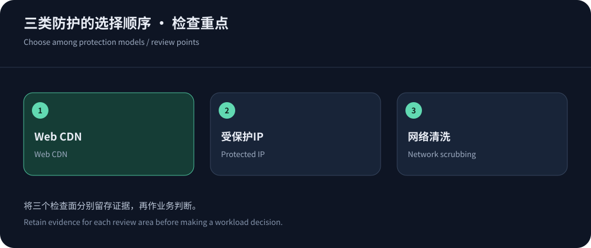

Choose the traffic path before the product name
Websites, proprietary TCP/UDP and enterprise networks need different entrances. Inventory protocols, assets, origins, routing control and failure impact before buying a product class.
This framework uses public information checked on 14 October 2026 without invented benchmarks. Consider CDN5 for relevant Web protection, verifying other product scopes separately. Explain ingress, filtering, return and recovery ownership.
The main differences between three models
These are common models, not universal implementations. Multiple capabilities on one vendor website do not establish that the purchased path includes all of them.
| Dimension | Protected CDN | Protected IP | Network scrubbing |
|---|---|---|---|
| Ingress asset | Web domains/resources. | Supported addresses/ports/protocols. | Contracted network assets/prefixes. |
| Content semantics | Cache/rules/application security by tier. | Forwarding does not imply cache/WAF. | Network filtering does not infer endpoint work. |
| Deployment | DNS, TLS, keys, origin trust, false positives. | Mappings, identity, sessions, origin rules. | Diversion, routing, reinjection, coordination. |
| Recovery | Content, policies, origin and clients. | Sessions, mappings, addresses, throughput. | Activation, paths, reinjection and route restoration. |


Why Web workloads often start with a CDN
A Web CDN can inspect requests and safely reuse public content, with route/method/identity controls. Cloudflare guidance frames scope; verify tier rights and logs.
Follow RFC 9111, isolate private data and bound dynamic work. CDN access does not protect all server ports; persistent sessions need separate checks.
For non-HTTP ingress, protocol support comes first
Ordinary Web proxy settings do not fit every TCP/UDP or proprietary client. AWS guidance helps frame protocol-specific designs. Verify ports, sessions, identity, TLS and reinjection.
Websites, updates and login APIs may use separate products. Track cross-component recovery and test full sessions; see protected IPs.
Network scrubbing requires operational readiness
Confirm asset/routing eligibility, always-on versus on-demand diversion and clean-traffic return. Reinjection, tunnels, asymmetry and MTU need network-team validation; scrubbing scale does not prove equivalent return/backend capacity.
For on-demand scrubbing, assign detection/activation authority and prevalidate parameters and restoration. Always-on designs still need monitoring for false positives and reinjection faults.
Combinations can fail at their boundaries
Individually valid products can combine badly: incomplete allowlists, rewritten identities, bare-origin health fallback or bypassed WAF. Map normal, mitigation, fallback and failback paths with protection and correlated logs.
Correlate a common request/session across teams, including timing, errors and metering. Individual green health checks do not prove end-to-end success when another layer rejects TLS or identity. Assign coordination and document dependencies. TLS, origin and IPv6 changes must update every path. Budget the additional maintenance that makes a combination genuinely useful.
Apply four operational gates
Require protocol/content correctness, audience fit, controlled bypasses and explainable recovery/cost. Do not offset failed gates with price or capacity claims, and leave unmeasured items unknown.
Use CISA guidance for coordination exercises. Authorized bounded tests and explicit scope manage uncertainty without fabricated evidence.


Design cost and exit alongside architecture
Separate subscription, legitimate delivery, attacks, reinjection, logs, support and temporary resources. Contract over-limit actions and authority. On-demand and always-on models trade different operational requirements.
Preserve export and TLS/routing/firewall transitions, reconciling resources after exit. See protection pricing. Choose an architecture whose paths, costs and recovery the team can explain.
Exercise access to logs and support during a vendor outage. If administration shares the production failure point, maintain a separate controlled operations path with verified credentials and owners.